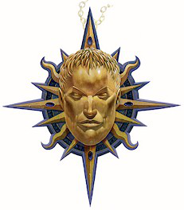

人类之神—萨斯 ( Zarus )
强大神力(守序邪恶)
很久之前,根据传说,萨斯是第一位男人,被这世界本身所创造.没有神祇参与他的出生,因为没有神祇能够想象出如此完美出色的造物.其它种族在这一天纷纷感到害怕,因为他们知道一个在各方面皆比它们优秀的存在诞生了.其之优雅胜过精灵,其之强健惊骇矮人,其之灵巧更是赢得了侏儒和半身人的敬畏.
由于萨斯只有孤单一人,其它种族让他活了下来,了解到他不可能繁殖更多像他这样的产物.然而萨斯对此并不满足,他向这世界乞求一位配偶-而产生了他的妻子,阿斯塔.就像他丈夫般,阿斯塔也是完美无缺的女人.其它种族在一次颤抖,深怕如此然美的配偶会繁殖出一支将他们全踩在脚下的种族.为了防范,他们的领袖秘密联合起来,构思着萨斯的死亡.他们将毒物混进美酒中,将它当作萨斯的结婚庆礼.
萨斯当然知道他们的阴谋,但他并没有拒绝这份厚礼,他在祝贺客人们的健康后即一饮而尽.药效立刻发作,然而当萨斯的生命渐渐流失时,世界对他起了怜惜之心,并将他升为神祇.萨斯俯视着这世界,并擦去阿斯塔的眼泪: "别再为我哭泣了,我的爱,"他抚慰着她, "现在我已成为真神,并看顾着我们的人民.你将会怀着我的孩子-他们已经躺在你的子宫了-并且这将是我们一族的开始.其它种族将会为了恐惧而颤抖,因为他们只配拜倒在我们的脚下.
这些是萨斯之书中所叙说着的故事,他教会的圣经.萨斯被称为"人族真神”,并被认为是第一位人类神祇.他只在乎人类,并鼓励信徒们向其它种族证明人族的优越性.不幸的是,他也对信徒们诉说着人类本来就该统治这世界,其它种族都只配当仆人.他的牧师教导着其它种族跟人类一比都只是次级品,需要人类的教导-和统治.
萨斯的牧师鼓励竞争和奴役,人类所能犯下的最严重的过错-据萨斯教会所说,是和非人种族发生关系.产生的子嗣是在人族血统上的污点,必须被抹去.
萨斯的外貌是有着难以置信的英俊外貌的人类青年,放射着金黄光芒.他鼓励信徒和祭司尽期所能的追求完美,并支配其它种族.
神职;人类,支配,完美.
领域:宿命,邪恶,秩序,力量,战争.
神职人员训练:萨斯的牧师寻找着那些迷人`健康,且对于其能力感到骄傲且向弱小者展现他们的尊贵的年轻人.他们已使他们更加完美来吸引这些人.这些新进侍从接受极其严格的训练,雕塑他们的体格,并了解到人族是最好的种族,并有义务统治这世界.这些年轻牧师学习到要如何说出振奋人心的言谈和挑起战争的手段.并开始在农村和小镇上传道,散拨他们的思想.
任务:萨斯派出他的追随者们去毁灭异族的领土,杀死他们的英雄和领袖,并窃去他们的神器.他鼓励人类军队征服异族领地并奴役其之人民.
祷告:萨斯较为喜爱实际行动,而不是言语,因此他们的信徒用运动和能参加能证明自身之优越的体育竞赛来向其祈祷.每日清晨,他们在运动完之后,会向人族真神发誓自己会做到他能力所及的最好,并向异族证明人族在各方面都是超乎其之上的.
神殿:萨斯的神殿们都是精良的建筑物,并不精致花俏,而是极度完美,只有着少许装饰.在墙上挂着描述人类才智的花毯:农业`狩猎`纺织`以及其它专业的画面.其之圣坛永远是座完美的男性雕像,萨斯本身的描述.
仪式:萨斯的信徒们在体育竞赛和战争,还有踏入异族土地时向他祷告,宗教仪式都短暂而直接,且都需要身体上的尽力(and require physical exertion)
信使和同盟:萨斯没有信使-他声称他并不需要.他派遣中等`大型`和巨型元素来响应异界誓盟系列法术.
喜好武器:巨剑.